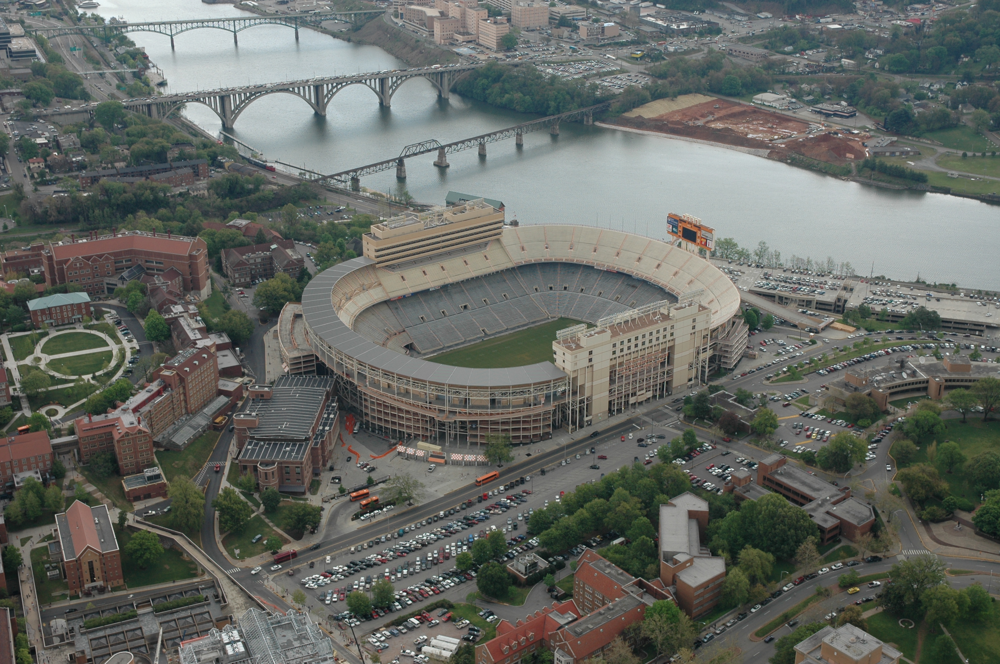
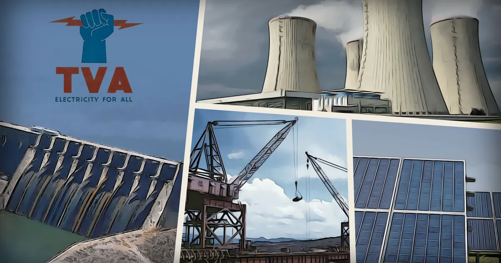

Era I: 1880 — 1932
The Appalachian Town
Before 1933, the Tennessee Valley was one of the poorest regions in the U.S. Residents faced chronic flooding, severe soil erosion, and isolation. Only ~3% of rural homes had electricity, keeping the area disconnected from the modernizing nation.
The River’s Edge
The unpredictable Tennessee River ravaged communities. In 1867, Chattanooga suffered its worst flood on record. Drag the slider below to see the dramatic difference TVA made.


Birds eye view of Knoxville (1886): By H. Wellge (drawing), Beck & Pauli (lithograph) - This map is available from the United States Library of Congress's Geography & Map Divisionunder the digital ID g3964k.pm009000.This tag does not indicate the copyright status of the attached work. A normal copyright tag is still required. See Commons:Licensing., Public Domain, Link
Neyland and downtown aerial: Neomrbungle - Own work, CC BY-SA 3.0, Link
The Arrival of the TVA (1933)
Created on May 18, 1933 under FDR’s New Deal, the Tennessee Valley Authority was tasked with modernizing the valley. Its goals: flood control, generating electricity, and improving agriculture. The federal government sought to uplift the poverty-stricken Tennessee Valley by constructing a series of dams, creating jobs, and introducing modern farming techniques. The initiative represented an unprecedented intervention by the federal government in regional planning and economic development.
Impact on Tennessee
The TVA radically shifted the region's economic reliance from traditional industry to federal and technical sectors, ushering in an era of rapid modernization and economic diversification across the entire valley.
Electricity Expansion
Hydropower modernized homes, brought factories to the region, and powered critical WWII sites like Oak Ridge and ALCOA. Electricity usage skyrocketed, transforming domestic life and enabling the rise of modern manufacturing hubs that drove the local economy for decades.
Flood Control
20 new dams built between 1933–1953 created reservoirs that stored excess water, preventing catastrophic downstream flooding. This extensive network of dams turned the volatile river into a reliable asset, saving millions of dollars in potential flood damage and saving lives.
Economic Growth
A 9-foot navigation channel lowered shipping costs and spurred industrial growth, fundamentally altering the job landscape. Inland ports thrived, and the availability of cheap, reliable power attracted major industries, establishing the region as a vital manufacturing center.
Agricultural Reform
TVA promoted contour plowing and fertilizer research, stopping severe soil erosion and improving crop yields. Demonstration farms educated local farmers on sustainable practices, revitalizing the depleted soil and drastically improving the agricultural output of the valley.
Legacy of the TVA
While the TVA brought unprecedented modernization, improved quality of life, and created vast recreational lakes, it came with trade-offs. Ecosystems were altered, and thousands of families and family cemeteries were permanently displaced.

(Binh Nguyen/Canary Media)